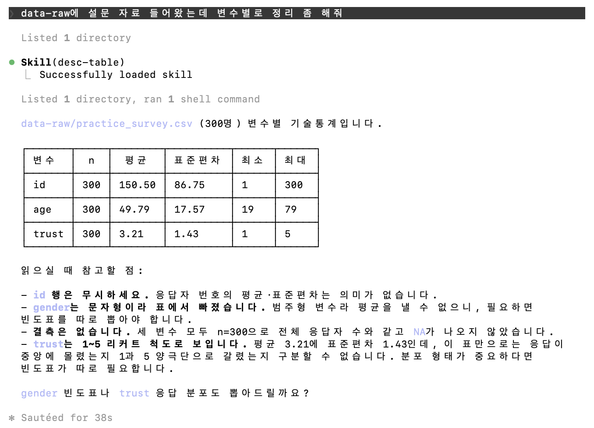

flowchart TB
subgraph VM["컴퓨터 (가상 머신)"]
subgraph AG["에이전트 = 모델 + 도구 + 루프 (2장)"]
M["모델"]
end
FS["파일시스템<br/>.claude/skills/ 의 SKILL.md들"]
EX["코드 실행<br/>Rscript · Python"]
end
FS -->|"① 상시: 이름 + description만"| M
FS -.->|"② 필요할 때: 본문·부속 파일"| M
M -.->|"③ 계산은 생성하지 않고 실행"| EX
classDef fixed fill:#E5E7EB,stroke:#6B7280
classDef accent fill:#9E1B32,stroke:#9E1B32,color:#fff
class FS,EX fixed
class M accent
3장. Skill — 반복 연구 작업의 모듈화
노트이 장에서 배우는 것
Skill의 구조(SKILL.md + 스크립트 + 리소스)와 progressive disclosure 원리를 설명할 수 있다
자신의 연구에서 반복되는 작업 하나를 Skill로 만들 수 있다
description 설계로 Skill의 발동 정확도를 개선할 수 있다
Skill을 연구실·동료와 공유하고 버전 관리할 수 있다
3.1 왜 Skill인가 — 프롬프트 복사·붙여넣기의 종말
3.1.1 세 번째 반복에서 멈추기
연구 생활을 돌아보면, 우리는 같은 일을 놀랄 만큼 자주 반복한다. 새 설문 데이터를 받을 때마다 하는 예비분석 — 변수 요약, 결측 확인, 가중치 적용 기술통계. 학회 발표 때마다 만드는 같은 골격의 슬라이드. 원고를 투고할 때마다 맞추는 저널 서식. 수업 때마다 만드는 같은 구조의 강의안.
AI를 쓰기 시작한 연구자들은 이 반복을 프롬프트의 반복으로 옮긴다. 잘 작동했던 프롬프트를 메모장에 저장해 두고, 필요할 때 복사해 붙여 넣는다. 이 방식은 곧 세 가지 문제에 부딪힌다. 첫째, 프롬프트가 흩어진다. 메모장, 카톡 내게 보내기, 지난 대화 스크롤 어딘가. 석 달 뒤에는 어느 버전이 최신인지 알 수 없다. 둘째, 매번 조금씩 달라진다. 붙여 넣은 뒤 즉석에서 한두 줄을 고치게 되고, 그 결과 산출물의 형식이 미묘하게 어긋난다. 재현가능성의 관점에서 이것은 매번 코드북을 다시 쓰는 코더와 같다. 셋째, 공유가 안 된다. 후배에게 “내 프롬프트 줄게”라고 파일을 건네는 순간, 그 파일은 두 갈래로 진화하기 시작한다.
이 문제들의 공통 원인은 절차가 대화 속에 있다는 것이다. 해법은 절차를 대화 밖으로, 파일로, 버전 관리되는 저장소로 꺼내는 것이다. 그 표준화된 형식이 Skill이다.
3.1.2 신입 조교에게 주는 온보딩 문서
Skill을 이해하는 가장 좋은 은유는 신입 연구조교의 온보딩 문서다. 유능한 신입이 들어왔다고 하자. 똑똑하지만 우리 랩의 방식은 모른다. 그에게 “설문 예비분석 좀 해줘”라고만 하면, 그는 자기 방식대로 그럴듯한 무언가를 만들어 올 것이다. 그래서 우리는 문서를 준다: 우리 랩에서 예비분석이란 무엇을 뜻하는지, 어떤 순서로 무엇을 확인하는지, 보고서는 어떤 형식인지, 그리고 조심할 함정은 무엇인지(예: “이 기관 데이터는 결측을 -9로 코딩한다”).
Skill은 정확히 이 문서다. 다만 읽는 쪽이 사람이 아니라 AI 에이전트일 뿐이다. 형식적으로 Skill은 SKILL.md라는 마크다운 파일 하나를 담은 폴더이며, 필요에 따라 스크립트와 템플릿, 참고 문서를 함께 담는다. 에이전트는 작업을 하다가 이 문서가 필요한 상황을 만나면 스스로 폴더를 열어 읽고, 지침대로 수행한다.
한 가지 안심할 점을 미리 적어 둔다. Skill은 2025년 말 특정 회사의 기능이 아닌 오픈 스탠다드로 공개되었다. 즉 여기서 익히는 작성법은 특정 제품에 대한 투자가 아니라, 이식 가능한 형식에 대한 투자다. “AI에게 주는 표준작업지침서(SOP)를 마크다운으로 쓴다”는 발상 자체는 도구가 바뀌어도 살아남을 것이다.
3.1.3 Skill이 아닌 것
경계도 분명히 하자. 2장의 CLAUDE.md와 Skill은 역할이 다르다. CLAUDE.md는 프로젝트의 상시 규칙이다 — 문체, 변수 명명, 금지 사항처럼 모든 작업에 적용되는 것. Skill은 특정 과업의 절차다 — 예비분석, 슬라이드 제작처럼 해당 작업이 있을 때만 필요한 것. 상시 규칙을 Skill에 넣으면 발동이 안 될 때 규칙이 사라지고, 과업 절차를 CLAUDE.md에 넣으면 모든 세션이 무거워진다. 경험칙: 항상 참이어야 하면 CLAUDE.md, 가끔 필요하면 Skill.
3.2 Skill의 해부학
해부에 앞서 스킬이 서는 무대를 그려 두자. 스킬이 “마크다운 파일”이고 “스크립트를 동봉”할 수 있는 것은 우연이 아니다 — 2장에서 본 대로 에이전트가 파일시스템과 코드 실행 도구를 가진 컴퓨터 위에서 일하기 때문이다.
화살표 ①②는 다음 항(3.2.2)에서 점진적 공개라는 이름으로 다루고, ③은 이미 여러 번 만났다 — 목록 하나를 정렬하는 데도 토큰을 생성하는 것보다 정렬 알고리즘을 실행하는 쪽이 훨씬 싸고 정확하다는 것이 Anthropic 소개 글의 논지이고, 3.3에서 계산을 R 스크립트에 고정하는 이유다.
3.2.1 최소 구조
가장 단순한 Skill은 폴더 하나와 파일 하나다.
survey-eda/
└── SKILL.mdSKILL.md는 YAML 머리말(frontmatter)로 시작한다. Agent Skills 공개 명세는 name과 description을 최소 메타데이터로 규정하므로 둘 다 적는 것이 안전하다. 다만 도구에 따라 느슨한 곳도 있어서, 이 글을 쓰는 시점의 Claude Code는 name을 생략하면 폴더 이름을 대신 쓴다. 어느 쪽이든 실질적으로 중요한 것은 description이다 — 3.2.2에서 볼 텐데, 스킬이 발동하느냐를 결정하는 것이 이 항목이기 때문이다. 나머지 항목은 전부 선택이다.
실무 규모의 Skill은 보통 부속물이 붙는다.
survey-eda/
├── SKILL.md # 절차와 판단 기준 (에이전트가 읽는 본문)
├── templates/
│ └── report.qmd # Quarto 보고서 골격
├── scripts/
│ └── eda_core.R # 검증된 핵심 계산 함수
└── reference/
└── weighting.md # 가중치 처리 상세 (필요할 때만 읽는 부록)flowchart TB
subgraph SK["survey-eda/"]
A["SKILL.md<br/>frontmatter: name + description<br/>본문: 절차와 판단 기준"]
B["templates/report.qmd<br/>보고서 골격"]
C["scripts/eda_core.R<br/>검증된 계산 — 그대로 실행"]
D["reference/weighting.md<br/>필요할 때만 읽는 부록"]
end
A -->|참조| B
A -->|"새로 짜지 말고 실행"| C
A -.->|"필요 시"| D
classDef fixed fill:#E5E7EB,stroke:#6B7280
classDef accent fill:#9E1B32,stroke:#9E1B32,color:#fff
class C fixed
class A accent
여기서 스크립트의 지위를 정확히 이해하는 것이 중요하다. eda_core.R은 에이전트가 참고해서 비슷한 코드를 새로 짜라고 주는 것이 아니라, 그대로 실행하라고 주는 검증된 부품이다. 신뢰도 계산처럼 실수가 치명적인 부분은 매번 생성시키지 말고 고정된 코드로 못 박는 것 — 이것이 Skill의 재현가능성 기여의 절반이다. 반대로 데이터마다 달라질 수밖에 없는 부분(변수 선택, 서술)은 지침으로 남긴다. 고정할 것과 맡길 것의 경계 긋기가 Skill 설계의 요체다.
3.2.2 Progressive Disclosure — 점진적 공개
Skill 시스템의 핵심 설계 원리는 progressive disclosure, 즉 점진적 공개다. 2장에서 본 대로 컨텍스트 창은 유한한 자원이다. 스킬 20개의 본문을 전부 미리 읽히면 정작 작업할 공간이 없다. 그래서 시스템은 세 단계로 정보를 연다.
- 세션 시작 시: 설치된 모든 스킬의 이름과 description만 로드된다. 책으로 치면 목차만 꽂혀 있는 상태다.
- 과업 인지 시: 사용자의 요청이 어떤 스킬의 description과 맞아떨어지면, 에이전트가 그 스킬의 SKILL.md 본문을 읽는다. 해당 장을 펼친 것이다.
- 필요 시: 본문이 참조하는 부속 파일(
reference/weighting.md등)을 그때 읽는다. 부록을 찾아본 것이다.
flowchart LR
A["1. 세션 시작<br/>모든 스킬의<br/>이름 + description만<br/><i>(목차)</i>"]
B["2. 과업 인지<br/>해당 SKILL.md<br/>본문 로드<br/><i>(장을 펼침)</i>"]
C["3. 필요 시<br/>부속 파일 로드<br/><i>(부록 참조)</i>"]
A -->|"요청이 description과<br/>맞아떨어지면"| B
B -->|"본문이 참조하면"| C
classDef gate fill:#fff,stroke:#9E1B32,stroke-width:2px
class A gate
이 구조의 실용적 귀결이 두 가지 있다. 첫째, 스킬에 담을 수 있는 지식의 양은 사실상 무제한이다 — 어차피 필요한 부분만 읽으므로. 참고 자료가 길어지면 본문에 욱여넣지 말고 부속 파일로 쪼개라 — 원칙은 하나다: 함께 쓰이지 않는 지식은 함께 로드되지 않게 하라. 둘째, description이 유일한 발동 장치다. 1단계에서 에이전트가 가진 정보가 이름과 description뿐이고 2단계로 넘어갈지를 그것만 보고 정하므로, 스킬이 발동하느냐 마느냐는 그 두세 문장에 달려 있다. 이 문제는 3.4절에서 집중적으로 다룬다.
3.2.3 스킬을 어디에 두는가
만든 파일을 어디에 저장하느냐가 그 스킬의 적용 범위를 결정한다. 초심자가 가장 자주 막히는 지점이므로 표로 정리한다.
| 위치 | 경로 | 쓰이는 범위 |
|---|---|---|
| 개인 스킬 | ~/.claude/skills/<이름>/SKILL.md |
내 컴퓨터의 모든 프로젝트 |
| 프로젝트 스킬 | <프로젝트>/.claude/skills/<이름>/SKILL.md |
그 저장소에서만. clone한 사람 모두에게 배포 |
| 플러그인 스킬 | <플러그인>/skills/<이름>/SKILL.md |
그 플러그인을 켠 곳 |
같은 이름의 스킬이 여러 곳에 있으면 개인 스킬이 프로젝트 스킬을 덮는다. 처음에는 개인 스킬로 만들어 혼자 다듬다가, 쓸 만해지면 프로젝트 폴더로 옮겨 공유하는 순서가 자연스럽다. 옮기는 일은 폴더를 통째로 복사하는 것이 전부다.
세 가지를 미리 알아 두면 첫 시도에서 덜 헤맨다.
- 폴더 이름이 곧 명령어다.
~/.claude/skills/desc-table/에 두면/desc-table로 부를 수 있다. frontmatter의name이 아니라 폴더 이름이 명령어를 정한다 — 둘을 다르게 적어 두고 왜 안 불리는지 찾는 일이 흔하다. - 파일 이름은 반드시
SKILL.md다. 대문자까지 그대로다.skill.md나desc-table.md로는 인식되지 않는다. - 고치면 바로 반영된다. 도구가 스킬 폴더를 지켜보고 있어서, SKILL.md를 고치거나 새 스킬을 추가해도 세션을 다시 시작할 필요가 없다. 예외는 하나다 — 세션을 시작할 때
skills/폴더 자체가 아예 없었다면, 그 폴더를 새로 만든 뒤 한 번은 재시작해야 한다.
프로젝트 스킬 위치가 1장과 만나는 지점이다. 프로젝트 스킬은 Git으로 버전 관리되는 파일이므로, 연구실 저장소에 스킬을 넣는 순간 그것은 연구실의 코드화된 표준 절차가 된다. 새 조교가 저장소를 clone하면 데이터와 코드만이 아니라 ’우리 랩이 일하는 방식’까지 함께 받는 것이다. 절차의 개정은 commit으로 이력이 남고, 누가 왜 바꿨는지 추적된다. 방법론의 구전 전승이 문서 전승으로 바뀌는 순간이다.
📦 박스 3-1. 보안: 남의 스킬은 남의 코드다
스킬은 공유가 쉬운 만큼 위험도 따라온다. 스킬에 포함된 스크립트는 내 권한으로 실행된다. 커뮤니티에서 받은 스킬이 내 파일을 읽고, 지우고, 어딘가로 전송하는 코드를 품고 있을 수 있다. 원칙은 소프트웨어 일반과 같다. 신뢰할 수 있는 출처(직접 작성, 공식 저장소, 검증된 동료)의 스킬만 설치하고, 제3자 스킬은 설치 전에 SKILL.md와 동봉 스크립트를 반드시 읽는다. “어디서 왔고 로드 시 무엇을 하는가”는 설치 후가 아니라 설치 전에 답해야 할 질문이다.
3.3 튜토리얼: 기술통계 표 스킬 만들기 — 두 가지 길
이제 처음부터 끝까지 하나를 만든다. 만들 스킬은 아주 작다 — CSV 한 장을 받아 수치형 변수의 기술통계 표(n·평균·표준편차·최소·최대)를 내놓는 것, 그게 전부다. 논문의 첫 표로 흔히 들어가는 그 표다. 작은 것을 고른 데는 이유가 있다. 스킬의 값어치는 기능의 크기가 아니라 반복했을 때 산출물이 같은가에서 나오고, 그것은 작은 스킬로도 똑같이 확인된다.
만드는 길은 둘이다. 하나는 파일 두 개를 직접 쓰는 것이고(3.3.1), 다른 하나는 에이전트에게 만들어 달라고 시키는 것 — 요즘 흔히 ’바이브 코딩’이라 부르는 방식이다(3.3.2). 이 절은 같은 과제를 두 길로 다 만들어 보고 나란히 놓는다. 미리 말해 두면, 속도로 보나 초안의 완성도로 보나 두 번째 길이 나을 때가 많다. 그런데도 손으로 만드는 길을 먼저 걷는 이유는 하나다. 어느 길로 가든 만들어진 것이 어떻게 구현되어 있는지 확인하는 일은 사람 몫으로 남는데, 그 확인은 구조를 한 번이라도 직접 지어 본 사람이라야 할 수 있기 때문이다.
3.3.1 길 하나: 손으로 만든다
특별한 도구가 필요 없다. 폴더를 만들고 텍스트 파일 둘을 저장하면 끝이다 — 설치 명령도, 등록 절차도 없다. 파일이 제자리에 있으면 도구가 알아서 읽는다(3.2.3).
단계는 여섯이다. 손으로 한 번 해 보고(0단계), 뼈대를 세우고(1단계), 본문과 고정 부품을 쓰고(2단계), 스크립트부터 시험한 뒤(3단계) 스킬로 얹어 불러 보고(4단계), 마지막으로 반복해서 흔들리는지 본다(5단계). 계산이 틀린 채로 에이전트에 물려 봐야 무엇이 잘못됐는지 가려지므로, 고정 부품을 먼저 다지고 문서를 나중에 씌운다.
0단계: 손으로 한 번, 기록하며
스킬 작성의 철칙: 자동화하기 전에 절차를 명문화할 수 있어야 한다. 스킬은 암묵지의 문서화이므로, 먼저 암묵지를 꺼내야 한다. 새 설문 자료를 받았을 때 평소 하는 일을 하되 모든 단계와 판단을 메모하라. 이런 것들이 나올 것이다.
- 파일을 열면 먼저 무엇을 보는가? (행 수, 변수 수, 변수 이름)
- 어떤 통계를 항상 내는가? 유효숫자는? 표의 열 순서는?
- 표에 넣지 않는 것은 무엇인가? (ID 열, 자유응답)
- 과거에 데었던 함정은? (“결측이 있는 줄 모르고 평균을 보고했던 날”)
마지막 항목이 특히 값지다. 함정 목록(gotchas)이야말로 스킬의 진짜 부가가치다. 일반 지식은 모델도 안다. 모델이 모르는 것은 당신의 데이터, 당신의 분야, 당신의 랩 특유의 함정이다.
1단계: 뼈대와 frontmatter
스킬은 폴더 하나에 파일 둘이다. 프로젝트 저장소 안 .claude/skills/ 아래에 두면 이 저장소를 clone한 사람 모두가 함께 받는다(3.2.3).
mkdir -p .claude/skills/desc-table/scripts만들려는 최종 모습은 이렇다.
.claude/skills/desc-table/
├── SKILL.md
└── scripts/describe.R먼저 SKILL.md의 머리말부터 쓴다.
description에 무엇이 들어갔는지 보라. (a) 무엇을 하는지, (b) 언제 쓰는지, (c) 사용자가 실제로 입력할 법한 문구. 셋 중 하나라도 빠지면 발동률이 떨어진다. 특히 (c)는 3.4에서 따로 다룬다 — “기술통계 표”라는 개념어만이 아니라 “설문 들어왔는데 요약 좀” 같은 실사용 문구를 함께 넣은 것이 요점이다.
2단계: 본문과 고정 부품
본문은 절차와 함정 목록이다. 전문을 싣는다.
본문의 절반이 함정 목록이라는 점을 눈여겨보라. 이 스킬이 하는 일은 세 줄이면 적히고, 나머지는 전부 하지 않는 일이다. 초보자가 스킬을 쓸 만하게 만드는 것은 기능이 아니라 이 목록이다.
계산은 스크립트에 고정한다(3.2.1의 원칙). 열여섯 줄이다.
옵션이 하나도 없다는 점이 중요하다. 인자는 파일 경로 하나뿐이다. 고를 것이 없으므로 회차마다 다르게 고를 수도 없다 — 5단계에서 이것을 실제로 확인한다.
3단계: 스크립트부터 시험한다
에이전트는 아직 부르지 않는다. 스크립트가 옳은 수를 내는지부터 손으로 확인한다. 재료는 1.5.3에서 쓴 연습용 설문 자료다(300명). 명령은 프로젝트 폴더에서 친다.
Rscript .claude/skills/desc-table/scripts/describe.R data-raw/practice_survey.csvage의 평균 49.79와 trust의 3.21은 쓸 만한 수다. 출력이 마크다운 표 문법이라 보고서에 그대로 붙여 넣으면 표로 표시된다.
그런데 첫 줄이 이상하다. id의 평균이 150.50이다. 응답자 일련번호의 평균이니 아무 의미가 없다. 여기서 갈림길이 나온다.
한쪽 길은 코드를 고치는 것이다. “고유값이 행 수와 같으면 식별자로 보고 빼자” 같은 규칙을 넣으면 된다. 그럴듯하지만, 그 규칙은 곧 다음 예외를 부른다 — 패널 자료에서는 ID가 반복되고, 어떤 자료는 ID가 문자열이고, 연도 변수도 빼야 하나 싶어진다. 열여섯 줄짜리 스크립트가 백 줄이 되는 것은 이런 식이다.
다른 길은 한계를 적는 것이다. 2단계에서 이미 적어 둔 함정 목록의 첫 줄 — “응답자 ID의 평균이 표에 나온다. 무의미한 값이니 그 행은 무시하라고 알려 준다” — 이 그 선택이다.
첫 스킬에서는 두 번째 길을 권한다. 작은 스킬을 작게 유지하는 값이 기능 하나보다 크다. 그리고 다음 단계에서 보겠지만, 이렇게 적어 둔 한계는 사장되지 않는다 — 에이전트가 그것을 읽고 사용자에게 대신 말해 준다.
4단계: 스킬로 설치해 부른다
여기까지 확인한 것은 스크립트다. 스킬 문서는 아직 한 번도 제 일을 하지 않았다 — 우리가 직접 Rscript를 쳤으니 SKILL.md는 읽힌 적조차 없다. 이제 얹는다.
설치는 파일을 제자리에 두는 것이 전부다(3.2.3). 그리고 스크립트 이름도, 스킬 이름도, 파일 경로도 대지 않고 평소 말하듯 요청한다 — “data-raw에 설문 자료 들어왔는데 변수별로 정리 좀 해줘”. 주고받은 것 전부가 아래 한 화면에 들어 있다.

Skill(desc-table) · Successfully loaded skill 이 이 단계의 핵심 — 스킬 이름을 대지 않았는데 에이전트가 스스로 골라 열었다는 표시이고, 3.2.2에서 설명한 점진적 공개의 2단계가 일어나는 순간이다. 화면이 마크다운 표를 표로 그려 주므로 어디에 붙여 넣을 필요조차 없다.
읽을 것이 셋이다.
첫째, 발동했다. description에 넣어 둔 “이 데이터 변수별로 정리해줘”가 실제 요청 “변수별로 정리 좀 해줘”와 맞아떨어졌다. 1단계에서 실사용 문구를 넣어 둔 것이 여기서 값을 한다.
둘째, 통계를 직접 계산하지 않았다. 표의 수는 전부 스크립트가 낸 것이고, 3단계에서 손으로 돌린 값과 같다. 원칙 절의 “통계를 직접 계산하지 않는다” 한 줄이 한 일이다.
셋째 — 그리고 이것이 3단계에서 예고한 것인데 — 함정 목록이 그대로 해설이 되었다. 표 아래 네 항목을 보라. id 행은 무시하라는 말, gender가 문자형이라 빠졌다는 말, 결측이 없다는 확인, trust가 리커트라 평균만으로는 분포를 알 수 없다는 경고. 우리가 SKILL.md에 적어 둔 함정 넷이 하나씩 문장이 되어 나왔다.
이것이 3단계의 갈림길에 대한 답이다. 스킬을 키우지 않고 한계를 적어 두면, 에이전트가 그 한계를 사용자에게 대신 말해 준다. 코드로 막았다면 사용자는 무엇이 막혔는지 몰랐을 것이다. 적어 두었더니 사용자가 알게 됐다.
5단계: 안정성 평가
마지막 단계는 반복이다. 같은 요청을 세 번 넣어 표를 비교했다. 각 회차에서 표 부분만 골라 run1.txt·run2.txt로 저장한 뒤 서로 견준다.
diff run1.txt run2.txtdiff는 두 파일이 같으면 아무것도 출력하지 않는다. 실제로 아무것도 나오지 않았다 — 1.2.2의 git add와 같은 침묵이고, 여기서는 그 침묵이 곧 답이다. 눈에 보이는 증거를 원하면 체크섬을 찍어 본다.
md5 run1.txt run2.txt세 번째 회차가 위 그림이고, 그 표 역시 같다. 서술 문장은 회차마다 달랐다 — 어떤 회차는 id를 먼저 짚고 어떤 회차는 결측을 먼저 말했다. 이 구분을 기억하라: 수치는 동일해야 하고, 서술은 달라도 된다. 표의 수치가 회차마다 다르다면 에이전트가 지시를 어기고 직접 계산한 것이니 원칙 절을 강화해야 한다.
수치가 흔들리지 않은 이유는 단순하다. 흔들릴 데가 없기 때문이다. 계산은 스크립트에 고정돼 있고, 스크립트에는 고를 옵션이 없으며, SKILL.md에는 판단을 요구하는 지점이 없다. 결정론은 기능을 더해서가 아니라 덜어서 얻어진다.
물론 덜어낸 만큼 못 하는 일이 생겼다. 이 스킬은 결측을 처리하지 않고, 범주형을 다루지 않고, ID를 걸러 내지 않는다. 정제가 끝나지 않은 자료를 물리면 표가 NA로 채워진다. 그것이 결함이 아니라 적용 범위라는 점, 그리고 그 범위를 함정 목록에 적어 두는 것이 스킬 설계의 절반이라는 점이 이 절의 요지다.
그리고 스킬을 만든 데이터에서 잘 도는 것은 증거가 아니다. 성격이 다른 자료로 옮겨 보는 이식 시험이 남았는데, 그것은 여러분의 자료로 하는 편이 낫다(아래 따라 하기).
3.3.2 길 둘: 에이전트에게 시킨다 — 바이브 코딩
길 둘 — 에이전트에게 만들어 달라고 한다. 요즘 흔히 ’바이브 코딩’이라 부르는 방식이다. 스킬도 결국 파일이므로, 파일을 쓸 줄 아는 에이전트에게 시키면 된다.
실제로 시켜 보자. 연습용 설문 자료만 들어 있는 빈 프로젝트에서, 3.3.1에서 손으로 만든 것과 같은 과제를 요청했다.
여기서부터 블록이 하나 늘어난다. 지금까지 회색 블록은 터미널에 치는 명령이었는데, 아래부터는 에이전트에게 말로 건네는 지시가 나온다. 둘은 성격이 다르므로 이 책에서는 지시를 붉은 테두리 박스에 담아 구분한다.
읽을 것이 셋이다.
첫째, 요청 한 줄에 만들고 검증까지 마쳤다. 표는 지어낸 것이 아니라 에이전트가 스크립트를 실제로 실행한 출력이다.
둘째, 시키지 않은 일을 했다. CLAUDE.md를 만들어 스킬을 등록했고, 요청에 없던 옵션(--digits, --out, --encoding)을 붙였다. 어느 것도 해롭지 않지만, 어느 것도 우리가 결정한 것이 아니다.
셋째, 권한 관문을 만나자 우회했고 — 그 사실을 보고했다. 2.2.2의 승인 체계가 .claude/ 쓰기를 두 번 막았는데, 에이전트는 기다리는 대신 임시 폴더에서 만들어 복사하는 경로를 찾았다. 막힌 것도, 돌아간 것도, 돌아갔다는 사실을 밝힌 것도 전부 기록으로 남았다. 승인 체계는 완벽한 차단 장치가 아니라 행동을 가시화하는 장치라는 것을 이 한 줄이 보여 준다.
만들어진 파일 속을 열어 보자. 응답만 읽고 끝내면 이 길의 핵심을 놓친다 — 산출물이 곧 앞으로 매번 실행될 부품이기 때문이다. 먼저 SKILL.md.
낯익은 구조다. description에 실사용 문구가 들어 있고(3.4에서 다룰 처방을 에이전트가 이미 쓰고 있다), “계산을 고정한다”는 원칙이 있고, ✅/❌로 경계를 긋고, 끝에 함정 목록에 해당하는 “알려진 한계” 절이 있다 — id 열 항목까지, 3.3.1에서 우리가 손으로 적은 것과 같은 종류다. 좋은 스킬의 골격은 누가 쓰든 비슷한 곳으로 수렴한다는 뜻이기도 하고, 에이전트가 그 골격을 이미 알고 있다는 뜻이기도 하다.
다음은 계산 부품. 여든세 줄 전부를 싣는다 — 길어 보이지만, 이 길을 택했다면 이것이 여러분이 읽어야 할 분량의 실물이다.
읽는 법을 연습 삼아 지도를 그려 보면 이렇다. 앞 3분의 1은 계산이 아니다 — 사용법 주석, 인자 검증, 옵션 파서, 파일 존재 확인(1~33행). 중간이 본론인데, 수치형 열만 골라내고(35~44행) 변수마다 결측을 뺀 뒤 다섯 통계를 낸다(46~57행). x[!is.na(x)] 한 줄이 3.3.1의 손코딩 판과 갈리는 지점이다. 나머지는 표 출력과 옵션 처리다(62~83행). 계산의 심장부는 결국 열 줄 남짓이고, 그 열 줄은 옳다 — 하지만 그것은 읽었으니까 할 수 있는 말이다.
만들어진 스킬이 실제로 발동하는지는 새 세션에서 확인한다. 스킬 이름을 대지 않고 평소 말하듯 요청한다.
발동했고, 표의 값은 3.3.1에서 손으로 만든 스킬과 정확히 같다 — 같은 자료에 같은 정의의 통계이니 당연한 결과이고, 당연해야 정상이다. 응답의 “id는 식별자 열이라 해석 대상이 아니다”라는 문장도 눈여겨보라. SKILL.md의 “알려진 한계”에 적힌 항목이 해설이 되어 나온 것이다 — 3.3.1의 4단계에서 손으로 적은 함정 목록이 해설이 되어 나왔던 것과 똑같은 현상이다.
여든세 줄. 같은 과제를 3.3.1에서 손으로 썼을 때는 열여섯 줄이었다. 방금 지도를 그리며 봤듯 차이 예순일곱 줄이 산 것은 결측 처리, 옵션, 방어적 검증이고, 대체로 합당하다. 문제는 다른 데 있다.
여러분이 읽지 않은 여든세 줄이 ’검증된 고정 부품’의 자리에 앉는다. 3.2.1에서 스크립트를 고정하는 이유가 “실수가 치명적인 계산을 생성 변동에서 격리하는 것”이라고 했다. 읽지 않은 코드는 그 격리를 해 주지 못한다. 오히려 매번 생성되는 코드보다 위험할 수 있다 — 틀려도 항상 똑같이 틀리고, 항상 똑같으니 의심받지 않기 때문이다. 박스 3-1이 남의 스킬에 대해 한 말은 에이전트가 만든 내 스킬에도 그대로 적용된다.
그래서 두 길의 쓰임이 갈린다.
| 손으로 쓰기 | 시켜서 만들기 | |
|---|---|---|
| 속도 | 느리다 | 요청 한 줄, 몇 분 |
| 얻는 것 | 모든 줄을 안다 | 생각 못 한 예외까지 처리된 초안 |
| 위험 | 빠뜨린 함정이 많다 | 읽지 않은 코드가 부품이 된다 |
| 어울리는 때 | 첫 스킬, 계산이 결과를 좌우할 때 | 이미 아는 절차를 빠르게 형식화할 때 |
정리하자. 속도로 보나 초안의 완성도로 보나 바이브 코딩이 나은 선택일 수 있다 — 요청 한 줄에 결측 처리까지 갖춘 부품이 나왔다. 그러나 어느 길로 왔든 마지막 관문은 같다. 만들어진 것을 열어 읽고, 어떻게 구현되어 있는지 확인하는 일은 사람의 몫이다. 읽지 않은 스킬은 아직 여러분의 것이 아니다. 이 절이 손으로 만드는 길을 먼저 걷게 한 이유가 여기 있다 — 열여섯 줄을 직접 지어 본 사람이 여든세 줄을 읽을 수 있다.
📦 박스 3-2. 규모가 커지면: 판단 게이트와 고정 부품
방금 만든 스킬은 판단할 자리가 없었다. 그래서 결정론적이었다. 그런데 모든 스킬이 그럴 수는 없다.
필자가 실제로 쓰는
survey-eda는 예비분석 전체를 다룬다 — 결측 패턴, 가중치 적용 기술통계, 척도 신뢰도, Quarto 보고서 생성까지. 여기에는 규칙으로 굳힐 수 없는 판단이 섞인다. 이 자료의 결측 코드가-9인가99인가, 어느 변수가 가중치인가, 어떤 문항이 한 척도인가. 틀리면 이후 분석 전체가 오염되는 결정들이다.그런 지점은 자동화하지 않고 ⚠ 표시로 인간 확인 게이트를 만든다. 절차서에 이렇게 적는다.
## 1단계: 데이터 점검 3. ⚠ 결측 코딩 후보(-9, -8, 99, 999, 빈 문자열)의 출현 빈도를 보고하고, 어떤 값을 결측으로 처리할지 사용자에게 확인받는다. 임의로 결정하지 않는다.좋은 스킬은 ’무엇을 자동으로 하는가’만큼 ’무엇을 자동으로 하지 않는가’를 명확히 적는다. 눈치챘겠지만 이것은 5장 PEV 루프의 검증 게이트를 스킬 문서 수준에서 구현한 것이다.
대신 게이트를 두는 순간 회차 간 변동이 따라온다. 매번 같은 것을 물어보는가? 어떤 회차에서는 묻지 않고 넘어가지는 않는가? 이 변동에 수를 붙이는 일이 5장의 평가 하니스다.
계산 쪽은 반대다. 신뢰도나 가중 통계처럼 검증이 끝난 계산은 매번 생성시키지 않고 부품으로 못 박는다.
survey-eda는scripts/eda_core.R에 함수를 두고 절차서가 “새로 구현하지 않는다”고 지시한다. (이 스킬은 필자의 작업 환경에서 돌아가는 것이라 절차서 전문을 여기 싣지는 않았다. 계산 부품 쪽만 실습 자료에 넣어 두었다.) 1.5.1에서 Quarto 문서 안에 등장했던w_desc_cont(df, vars, wt = "wt")가 그 함수다 — 스킬이 만든 보고서가 스킬의 부품을 호출하고 있었던 셈이다.요약하면 판단은 게이트로 사람에게, 계산은 부품으로 코드에. 그리고 굳힐 수 있는 판단이라면 3.3.1처럼 아예 규칙으로 굳혀 게이트를 없애는 편이 낫다.
💻 따라 하기: 위 두 파일을 그대로 만들어 .claude/skills/desc-table/에 두고, 스킬 이름을 대지 말고 자신의 데이터로 요청해 보라. 그리고 같은 요청을 세 번 넣어 표가 같은지 확인하라. 십중팔구 여기서 다루지 않은 한계가 하나는 드러날 것이다 — 문자로 코딩된 결측, 인코딩이 깨진 한글 변수명, 날짜 열. 그것을 코드로 막을지 함정 목록에 적을지 정하는 것이 여러분의 첫 설계 결정이다. 여력이 되면 같은 과제를 에이전트에게도 시켜 보라(3.3.2). 두 산출물을 나란히 읽는 것만큼 좋은 코드 읽기 연습은 드물다.
3.4 description 설계와 트리거 문제
만들어 둔 스킬이 발동하지 않는다 — 스킬 사용자의 가장 흔한 불만이며, 원인의 대부분은 description이다. 진단 절차는 간단하다. 에이전트에게 스킬 이름을 지목해 실행을 요청해 보라(“desc-table 스킬로 이 파일을 정리해줘”). 이름을 지목하면 잘 되는데 자연스러운 요청(“이 설문 좀 봐줘”)에는 발동하지 않는다면, 본문이 아니라 description의 문제다.
처방은 사용자의 실제 언어를 description에 넣는 것이다. 우리는 스킬을 만들 때 자신의 개념어(“예비분석”, “EDA”)로 쓰지만, 정작 요청할 때는 일상어(“이 데이터 좀 봐줘”, “설문 들어왔는데 정리해줘”)를 쓴다. 한국어 사용자라면 한국어 요청 문구를 그대로 넣어야 한다. 자신이 지난 한 달간 실제로 입력한 요청 문장들을 찾아 description에 반영하라.
반대 방향의 실패도 있다. 스킬이 너무 자주, 엉뚱한 상황에 발동하는 경우다. 특히 유사한 스킬이 여럿일 때(설문 예비분석 vs 실험 데이터 예비분석) 경계가 흐려진다. 이때는 description에 배제 조건을 명시한다: “실험 처치가 포함된 데이터에는 experiment-eda를 사용하고 이 스킬을 쓰지 않는다.” 스킬이 20~30개 수준까지는 무난히 작동하지만 그 이상에서는 description 품질이 시스템 전체의 성패를 가른다고 알려져 있다 — 개인 연구자가 그 규모에 이를 일은 드물지만, 연구실 공유 저장소는 의외로 빨리 도달한다.
💻 미니 실습: 자신의 스킬 description을 두 버전(개념어 중심 vs 실사용 문구 포함) 만들어, 같은 자연어 요청 10개에 대한 발동 여부를 비교하라.
3.5 남의 스킬 상자 구경하기: 정치학자들의 실물
3.2에서 “남의 SKILL.md를 읽는 것이 가장 빠른 학습법”이라고 했다. 공식 예제(anthropics/skills)도 좋지만, 가장 배울 것이 많은 상자는 같은 분야 연구자의 것이다. 마침 정치학자 두 사람이 자신의 스킬 상자를 공개해 두었다. 이 절은 그 실물을 관람하고, 끝에서 하나를 실제로 빌려 돌려 본다. 박스 1-5에서 세운 규칙대로 관람도 라이선스 확인에서 시작한다 — 각각 MIT와 CC BY-NC 4.0이고, 두 저장소 모두 2026년 8월에 받아서 실행까지 확인했다.
3.5.1 Kenny의 상자: 글은 내가 쓰고, 점검은 스킬에게
Christopher T. Kenny의 저장소(github.com/christopherkenny/skills)는 스스로를 “사회과학자를 위한 Claude Skills 모음”이라 소개한다. 열한 개가 들어 있다.
| 스킬 | 하는 일 |
|---|---|
proofread |
문법·구두점·정확성 점검 보고서 |
write-well |
Zinsser의 On Writing Well 원칙으로 산문 품질 점검 |
apsa-style |
APSA 표기 규정(숫자·대문자·약어) 점검 |
assess-outline |
논문 개요를 구조화된 기준으로 평가 |
paper-summary |
사회과학 논문의 전문가 수준 요약 |
latex-to-quarto · latex-to-typst · quarto-clean · markdown-unwrap |
조판 형식 변환·정리 |
pseudo-merge |
위 점검 보고서를 편집기에서 클릭해 반영하게 변환 |
redistricting-analysis |
redistverse 생태계 기반 선거구 획정 분석 |
읽을 점이 셋이다.
첫째, 상자 전체를 관통하는 태도가 README 첫머리에 있다. “나는 여전히 LLM이 우리 글을 대신 쓰게 해서는 안 된다고 생각한다. 그러나 연구 가치에 비해 지루하고 시간이 드는 기본 작업은 많다 — 교정, 스타일 규정 점검, 나쁜 산문 찾기는 Claude라는 이름의 카피에디터에게 맡기기 좋은 일이다.” 그래서 이 상자의 집필 스킬들은 원문을 고치지 않고 보고서만 낸다 — write-well의 description에 “never modifies the source file”이 명시돼 있고, 반영 여부는 사람이 pseudo-merge로 하나씩 고른다. 우리가 배운 인간 게이트가 남의 상자에서는 이렇게 구현돼 있다.
둘째, 경계 명시의 실물. write-well description의 끝은 이렇다 — “문법과 구두점은 proofread 스킬을, APSA 규정은 apsa-style 스킬을 쓰라.” 3.4에서 말한 배제 조건이 실제 상자에서 어떻게 일하는지 보여 준다.
셋째, 목록의 마지막 줄. 열 개가 범용 집필 도구인데 하나만 다르다 — redistricting-analysis는 Kenny 자신의 연구 분야(선거구 획정)와 자신이 만든 R 생태계(redistverse)의 스킬화다. 전공의 암묵지가 스킬이 되는 자리이고, 여러분의 상자에서 이 자리에 올 것이 무엇인지가 3.3 다음에 던질 질문이다.
3.5.2 Denney의 상자: 연구 수명주기 전체, 그리고 자기 감사
Steven Denney의 open-science-skills(github.com/scdenney/open-science-skills)는 규모가 다르다. 계산사회과학자를 위한 스킬 서른아홉 개가 연구 수명주기 순으로 조직돼 있다. 발췌만 옮긴다.
| 단계 | 스킬 (발췌) |
|---|---|
| 설계 | survey-design · list-experiment · conjoint-design · pre-registration-writing |
| 텍스트 자료 | topic-modeling · text-classification · vlm-ocr-pipeline · post-ocr-cleanup |
| 원고 QA | citation-check · fact-check · figure-table-audit · journal-review |
| 공개·재현 | replication-package · fair-check · research-repo |
여기서도 읽을 점이 셋이다.
첫째, 스킬에 참고문헌이 달려 있다. 저장소의 SOURCES.md는 이 절차 지침들이 근거한 문헌 150여 편의 서지다. “절차의 권위는 어디서 오는가”에 대한 이 상자의 답 — 방법론 문헌에서 온다 — 이고, APSA·JARS·DA-RT 같은 보고 규범이 스킬 본문에 박혀 있다.
둘째, 상자가 자기를 감사한다. AUDITS.md에는 저자가 자기 스킬 백여 개를 열두 개의 독립 감사자(여러 모델의 조합)에 넣어 점검한 기록이 남아 있다 — “치명 4건, 주요 약 113건, 경미 약 172건”을 찾아 고쳤다는 로그까지. 스킬 상자가 이 책 1장의 규범(이력을 남기고, 감사하고, 그 기록을 공개한다)을 자기 자신에게 적용하고 있는 것이다.
셋째, 이 책과의 합류. 이 상자의 text-classification(코드북·검증·일치도 통계)은 우리가 5장과 7장에서 만들 골든셋 검증과 같은 발상이다. 이 책을 여기까지 따라온 독자라면 서른아홉 개 목록이 낯설지 않을 것이다 — 대부분이 “우리가 배운 원칙의 스킬화”로 읽힌다.
3.5.3 journal-review의 안쪽: 여덟 역할과 논문 한 편
3.5.2의 표에서 스치듯 지나간 journal-review를 열어 본다. Denney 상자에서 가장 무거운 스킬이다 — 서브에이전트 여덟 개가 단계별로 얽힌 동료심사 파이프라인이고, 실제로 몇 분씩 걸린다. 프롬프트를 먼저 읽고, 그다음 실제 논문 한 편에 돌려 무엇이 나오는지 본다.
구조. 4단계다. 1단계는 다섯 개의 독립 판독 에이전트(Breaker·Butcher·Shredder·Void·Situator)를 병렬로 띄운다 — 서로의 출력을 보지 못한 채 각자 5~10개의 이슈를 낸다. Breaker는 이론적 기반과 논증 구조를, Butcher는 표와 분석 절차를, Shredder는 절차적 진술이 실제로 문서화됐는지를, Void는 “있어야 하는데 없는 것”을, Situator는 선행연구 대비 기여를 심사한다. 2단계는 Blue Team이 다섯 에이전트가 낸 이슈 전부를 A~G 일곱 범주로 분류한다 — A(판독 오류)·B(원고가 이미 인정)·C(사소한 표기)·E(그림 해석에 의존)·F(결함이 아니라 논지의 일부)면 버리고, D(구조적 모순)·G(방어 불가)만 남긴다. 3단계는 Chief Reviewer가 살아남은 이슈를 합쳐 표준 심사 보고서(Recommendation·Summary·Major Concerns·Additional Concerns·Suggestions)로 종합하고, 명시된 판정 기준표로 권고를 정한다. 4단계는 Tone Guard가 초고를 훑어 의도를 함축하거나 부정행위를 시사하는 표현(“의도적으로”, “은폐”, “조작된”)을 사실 서술로 되돌린다.
모델 배정은 일의 성격을 따라간다.
| 역할 | 모델·강도 | 하는 일 |
|---|---|---|
| Breaker · Situator · Void | Opus, high | 이론적 기반·선행연구 위치·부재 판단 — 열린 판단 |
| Butcher · Shredder | Sonnet, high/medium | 표·절차 대조 — 꼼꼼하지만 정해진 절차 |
| Blue Team | Sonnet, medium | 고정된 A~G 표에 넣는 분류 작업 |
| Chief Reviewer | Fable, high | 유일한 종합 지점 — 가장 비싼 모델을 여기에만 쓴다 |
| Tone Guard | Sonnet, low~medium | 고정 문구 목록과의 패턴 매칭 |
읽을 점을 셋만 짚는다. 첫째, 모델 티어가 일의 성격을 따라간다. 열린 판단(Breaker·Void·Situator·Chief Reviewer)은 Opus 이상에, 대조·분류처럼 정답이 정해진 일(Butcher·Shredder·Blue Team·Tone Guard)은 Sonnet에 맡긴다. 가장 비싼 모델(Fable)은 유일한 병목인 종합 단계에만 쓴다 — 값싼 곳에 비싼 모델을 쓰지 않는다는 원칙의 실물이다. 둘째, Void의 편향은 방향이 새겨져 있다. 지침은 “결론을 약화시키는 누락만 찾아라, 강화시키는 누락은 찾지 말라”고 명시한다(“the dog that didn’t bark”) — 저자가 스킬에 편향의 방향까지 설계해 넣은 것이다. 셋째, Tone Guard 자체가 배제 조건의 사후 필터다. 3.4에서 배운 “무엇을 하지 않는지 명시”가 여기서는 사전 선언이 아니라, 종합 결과를 검사해 되돌리는 별도 에이전트로 구현돼 있다. 그리고 Chief Reviewer의 출력은 어디까지나 초고이며, 인용을 원문과 전부 대조하는 것은 사람의 몫이라고 스킬 자신이 못박아 둔다 — 1장의 인간 게이트가 여기서도 반복된다.
실전. 대상 논문은 arXiv:2506.01839(Haase & Pokutta, “Beyond Static Responses: Multi-Agent LLM Systems as a New Paradigm for Social Science Research”) — 4장이 필독 문헌으로 이미 인용한 그 논문이다. 1장 1.4 구조로 만든 격리 폴더에 스킬을 설치하고(3.2.3의 절차 그대로), 이번에는 스킬 이름을 대며 요청했다 — journal-review는 8-에이전트 파이프라인이 순서대로 도는 무거운 절차라, 아래 3.5.4에서 시험할 암묵적 발동(스킬 이름을 대지 않는 요청)과 달리 이번에는 명시가 맞다. headless 실행이라 사람의 승인 없이 끝까지 진행되도록 권한을 미리 열어 두었다.
여덟 에이전트가 전부 돈 뒤 최종 보고서가 나왔다. 권고는 Reject. 여섯 개 Major Concerns 가운데 둘만 옮긴다 — 원문과 표를 직접 대조해야 잡히는 유형이라 스킬의 값어치를 가장 잘 보여 준다.
본문에 옮기며 줄바꿈은 지면 폭에 맞추지 않고 원본 파일의 단락 그대로(문단당 한 줄) 두었다 — 가로로 길면 화면이 스크롤된다.
진짜 모순을 잡았다. 이 책의 사실성 원칙에 따라 위 인용 네 곳(“Memory Integration”, “remain stateless”, “underexplored”, Table 2의 레벨별 집계)을 원본 PDF에서 직접 다시 뽑아 대조했다 — 전부 정확했다. Table 1의 “Memory Integration”이 처음 검색에서 안 잡힌 것도 결함이 아니라 표 셀의 줄바꿈 때문이었다. 스킬 자신도 마지막 단계에서 인용 전량을 원문과 대조하도록 못박아 두었고(체크리스트 항목 “Every quote in the report verified against the PDF”), 이번에는 필자가 독립적으로 한 번 더 확인한 셈이다.
보고서는 스스로 한계를 밝힌다. /sci-edit(산문 다듬기 스킬)가 이 데모 환경에 설치돼 있지 않아 4단계까지만 돌고 5단계는 건너뛰었다고 에이전트가 스스로 알렸다. 6단계(편집자 비공개 노트)는 스킬 규정상 사람에게 먼저 물어야 하는데, 실행이 그 지점에서 멈추고 확인을 요청했다 — Kenny 상자의 “원문을 고치지 않고 보고서만 낸다”는 절제와 같은 결의 규율이다. 보고서 분량도 정직하다 — 지침의 예산은 1,200~2,000단어인데 2,119단어로 초과했고, 이유를 “모든 문단이 검증된 인용 하나씩을 물고 있어 임의로 줄이지 않았다”고 스스로 밝혔다.
재현 면책. 같은 지시를 다시 넣어도 문장은 매번 다르게 나온다 — 여덟 에이전트가 다시 읽고 다시 쓰기 때문이다. 위에서 검증한 것은 문장의 정확한 재현이 아니라 인용이 원문에 있다는 사실이며, 그것이 이번 실행 한 번의 기록이라는 점을 밝혀 둔다.
3.5.4 하나 빌려 돌려 보기
관람은 실행으로 완성된다. Denney의 research-repo — 연구 저장소의 구조를 세우거나 감사하는 스킬 — 를 골라, 1장 1.4의 구조로 만든 실습 프로젝트에 설치했다. 설치는 3.2.3 그대로 폴더 복사 한 번이고, 박스 3-1의 규칙대로 설치 전에 SKILL.md와 동봉 파일을 읽었다. 그리고 스킬 이름을 대지 않고 요청했다.
이 한 번의 실행에 이 장의 주제들이 전부 돌아와 있다.
발동부터. 이 스킬의 description은 영어뿐인데(“audit my repo structure”) 한국어 요청에 열렸다 — 두 번 시험해 두 번 모두 스킬 호출 기록을 확인했다. 매칭은 번역이 아니라 의미로 이루어진다는 뜻이다. 다만 이것이 3.4의 처방을 무효화하지는 않는다. 두 번 열렸다는 것이지 언제나 열린다는 보장이 아니고, 한국어 사용자를 위한 스킬이라면 한국어 실사용 문구를 넣는 편이 여전히 안전하다.
진짜 결함을 잡았다. 고백하자면 1번 지적은 연출이 아니다. 이 데모를 준비하면서 필자가 다른 자료의 코드북을 무심코 복사해 넣었는데, 빌려 온 스킬이 그것을 첫 번째 문제로 정확히 짚었다. 남의 스킬을 돌리는 값어치가 바로 이런 데 있다 — 내 프로젝트를 내 습관 바깥의 눈이 본다.
1장이 돌아왔다. “새로 클론하면 스크립트가 바로 실패한다”는 지적은 1.4 원칙 2의 폴더 삭제 검사를 남의 규약이 다시 들이댄 것이다. 좋은 관행은 상자가 달라도 같은 지점을 본다.
그리고 좋은 스킬은 자기 규약을 강요하지 않는다. 이 스킬의 조직 원리(문헌 코퍼스 중심의 sources/ 구조)는 우리 실습 프로젝트에 없다. 스킬은 그것을 결함으로 몰지 않고 프로젝트 유형을 감지해 해당 항목을 “n/a”로 처리했다. 남의 스킬을 고를 때 눈여겨볼 품질이다.
3.5.5 빌린 것을 내 것으로
가져다 쓰기 시작하면 관례 셋을 권한다. 개정은 PR로 — 절차의 변경은 곧 방법론의 변경이다(1.3.3). CHANGELOG를 SKILL.md 말미에 — 함정 목록이 자란 이력이 연구실의 경험 그 자체다. 논문에 쓴 스킬 버전은 태그로 고정 — “당시의 절차”를 소환할 수 있어야 한다(1장, 8장).
마지막으로, 남의 상자에서 정말 가져올 것은 스킬 파일이 아니라 구조 감각이다. 원문을 고치지 않고 보고서만 내는 절제, 경계의 명시, 절차에 근거 문헌을 다는 습관, 상자가 자기를 감사하는 규율. 여러분의 상자가 자라기 시작하면, 파일 개수가 아니라 이 감각이 상자의 값을 정한다.
실습 과제
- 반복 작업 감사. 지난 한 달의 연구 활동에서 반복된 작업 5개를 목록화하고, 각각에 대해 세 조건 — 한 달에 두 번 이상 반복되는가, 절차를 이미 말로 설명할 수 있는가, 실패해도 원자료가 다치지 않는가 — 를 평가하라. 1위 작업을 선정하라.
- 스킬 제작. 선정한 작업을 3.3.1의 여섯 단계(손으로 한 번 → 뼈대 → 본문과 고정 부품 → 스크립트 시험 → 스킬로 부르기 → 안정성 평가)로 스킬화하라. 함정 목록에 최소 2개 항목을 채워라.
- 상호 리뷰. 동료와 스킬을 교환해 서로의 데이터에서 실행하라. 리뷰 항목: 자연어 요청에 발동하는가, ⚠ 게이트가 적절한 곳에 있는가, 함정 목록이 충분한가. 발견 사항을 Issue로 남겨라(1장).
- 비용·품질 비교. 같은 작업을 스킬 없이(즉석 프롬프트로) 수행한 결과와 비교해, 소요 시간과 산출물 형식 일관성의 차이를 한 단락으로 기록하라.
이 장의 체크리스트
더 읽을거리
(웹 자료의 주소는 2026년 8월에 접속을 확인했다.)
- Anthropic (2025). “Equipping agents for the real world with Agent Skills.” https://www.anthropic.com/engineering/equipping-agents-for-the-real-world-with-agent-skills — 3.2.2 점진적 공개 설계 철학의 원전. PDF 처리 스킬 하나를 실물로 해부한다
- Agent Skills 명세. https://agentskills.md — 오픈 스탠다드 문서. 3.1.2에서 말한 이식성의 근거이며, SKILL.md의 필수·선택 항목이 여기 정의되어 있다
- Agent Skills 공식 문서. https://platform.claude.com/docs/en/agents-and-tools/agent-skills/overview — 설치 위치, 발동 방식, 부속 파일 규약의 실무 안내
- anthropics/skills. https://github.com/anthropics/skills — 공식 예제 스킬 모음. 남의 SKILL.md를 읽는 것이 가장 빠른 학습법이다
다음 장 예고: 스킬이 ’한 과업의 절차’라면, 4장의 에이전트 설계는 ’과업들의 분업’이다. 그리고 5장에서는 이 모든 것을 믿을 수 있게 만드는 검증 구조를 짓는다. 3장의 ⚠ 게이트와 반복 실행 비교가 사실은 5장의 예고편이었음을 그때 확인하게 될 것이다.